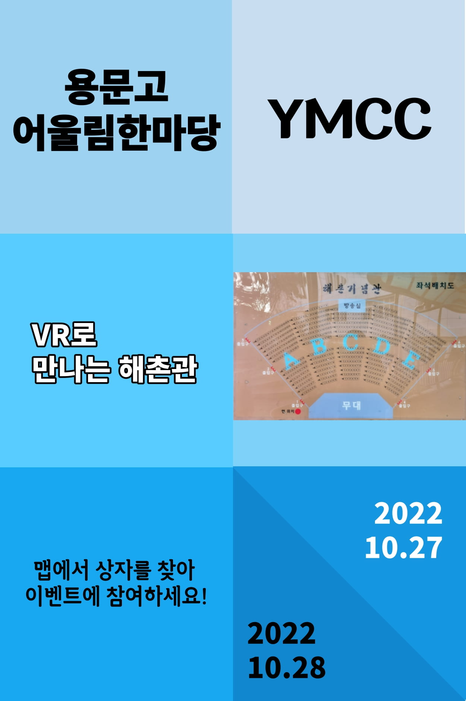

vr부

코딩을 통해 vr스페이스를 제작하고 스페이스 내에서 해촌기념관을 구성함.
3d스페이스를 활용하여 보물찾기 이벤트를 구성했음 구성된 3d스페이스 내에서 보물을 찾아 부서장(박시우)에게 문의하세요
코딩을 통해 vr스페이스를 제작하고 스페이스 내에서 해촌기념관을 구성함.
3d스페이스를 활용하여 보물찾기 이벤트를 구성했음 구성된 3d스페이스 내에서 보물을 찾아 부서장(박시우)에게 문의하세요